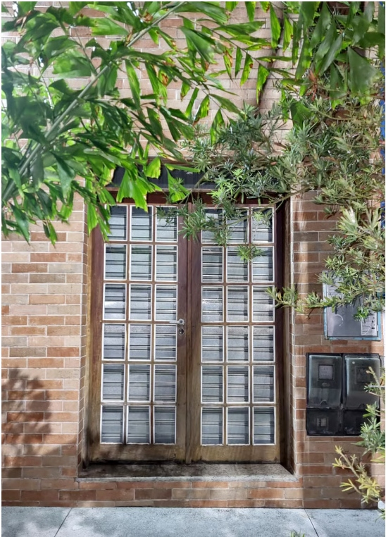

Na Sottile Pizzaria, nossas raízes mergulham fundo na tradição italiana que inspira cada receita.
Nascida de uma mistura de paixão e dedicação à verdadeira arte da pizza, nossa jornada começou com uma ideia simples e especial: elevar a experiência gastronômica em Salvador. Nosso time, formado por pizzaiolos experientes e amantes da culinária italiana, é o coração da nossa casa. Não estamos aqui apenas para assar pizzas; estamos aqui para criar momentos. Cada membro traz seu toque único, contribuindo para nossas massas artesanais, molhos exclusivos e compromisso com a qualidade. Reconhecida pelo sabor e carinho, a Sottile se tornou mais que uma pizzaria; é um ponto de encontro onde cada fatia aproxima pessoas.

Nossa história avança junto com a evolução da culinária italiana na cidade. Desde a escolha dos ingredientes até a pizza sair do forno, cada etapa reflete nossa dedicação à tradição e à inovação. Temos orgulho de nossas práticas responsáveis, garantindo que cada pizza entregue não só encante, mas também valorize a cultura que representamos. O carinho do público, dos elogios aos pedidos recorrentes, alimenta ainda mais nossa paixão.